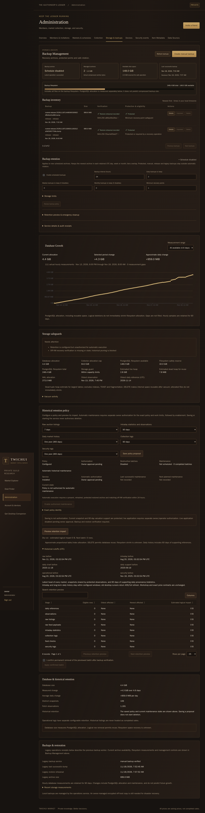
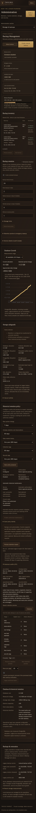

Genuine production data over verified public HTTPS. Scheduler installed; historical deletion unauthorized and disabled. Policy revision3 is the preserved concurrent owner save. No live pruning occurred.

